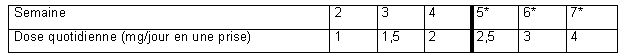

RÉSUMÉ DES CARACTÉRISTIQUES DU PRODUIT
ANSM - Mis à jour le : 21/05/2014
ROPINIROLE TEVA 0,25 mg, comprimé pelliculé
2. COMPOSITION QUALITATIVE ET QUANTITATIVE
Ropinirole ...................................................................................................................................... 0,25 mg
Sous forme de chlorhydrate de ropinirole ...................................................................................... 0,285 mg
Pour un comprimé pelliculé.
Excipient à effet notoire: lactose
Chaque comprimé pelliculé contient 105,08 mg de lactose.
Pour la liste complète des excipients, voir rubrique 6.1.
Comprimé pelliculé.
Comprimés pelliculés blancs, ronds, légèrement bombés, gravés « R 0.25 » sur une face, l'autre face étant lisse.
4.1. Indications thérapeutiques
· Maladie de Parkinson dans les conditions suivantes:
o traitement de première intention en monothérapie pour différer la mise à la dopathérapie,
o association à la lévodopa en cours d'évolution de la maladie lorsque l'effet de la dopathérapie s'épuise ou devient inconstant, et qu'apparaissent des fluctuations de l'effet thérapeutique (fluctuations de type "fin de dose" ou effets "on-off").
· Traitement symptomatique du Syndrome des Jambes Sans Repos idiopathique modéré à sévère (voir rubrique 5.1).
4.2. Posologie et mode d'administration
La posologie doit être adaptée individuellement, en fonction de l'efficacité et de la tolérance.
Maladie de Parkinson.
Le ropinirole doit être administré en trois prises, de préférence au cours des repas pour améliorer la tolérance gastro-intestinale.
Début du traitement
La dose initiale de ropinirole recommandée est de 0,25 mg, 3 fois par jour pendant la première semaine. La dose de ropinirole est ensuite augmentée de 0,25 mg par prise, 3 fois par jour selon le schéma suivant:
|
|
SEMAINE |
|||
|
1 |
2 |
3 |
4 |
|
|
Dose de ropinirole par prise (mg) |
0,25 |
0,5 |
0,75 |
1 |
|
Dose de ropinirole quotidienne totale (mg) |
0,75 |
1,5 |
2,25 |
3 |
Poursuite du traitement
Après la phase d'instauration du traitement, la dose de ropinirole peut être augmentée chaque semaine de 0,5 à 1 mg par prise, 3 fois par jour (soit 1,5 à 3 mg/jour).
Une réponse thérapeutique peut être obtenue pour des doses de ropinirole allant de 3 à 9 mg/jour. Si les symptômes ne sont pas ou plus suffisamment contrôlés après la phase d'instauration décrite ci-dessus, la dose de ropinirole peut être progressivement augmentée jusqu'à 24 mg par jour.
Des doses quotidiennes de ropinirole supérieures à 24 mg n'ont pas été étudiées et cette dose ne doit pas être dépassée.
Si le traitement est interrompu pendant un jour ou plus, la reprise du traitement devra se faire selon le même schéma posologique (décrit plus haut).
Lorsque le ropinirole est administré en association à la lévodopa, la dose de lévodopa peut être progressivement réduite d'environ 20 %.
Lorsque le ropinirole est utilisé en remplacement d'un autre agoniste dopaminergique, ce dernier doit être arrêté selon les recommandations qui s'y rattachent avant de commencer le traitement par le ropinirole.
Comme pour les autres agonistes dopaminergiques, s'il est nécessaire l'arrêt du traitement par le ropinirole doit se faire progressivement en réduisant le nombre de prises quotidiennes sur une période d'une semaine.
Pour des doses non réalisables/faisables avec cette spécialité, d'autres dosages ou d'autres formes pharmaceutiques sont disponibles.
Syndrome des jambes sans repos
Le ropinirole doit être administré au moment du coucher mais pas plus de 3 heures avant celui-ci. Le ropinirole peut être pris au cours du repas afin d'améliorer la tolérance gastro-intestinale.
Instauration du traitement (semaine 1):
La dose initiale recommandée est de 0,25 mg, une fois par jour (comme indiqué ci-dessous) pendant deux jours. Si cette dose est bien tolérée, elle sera augmentée à 0,5 mg, une fois par jour jusqu'à la fin de la première semaine.
Poursuite du traitement (à partir de la semaine 2):
Après la phase d'instauration du traitement, la dose quotidienne sera augmentée jusqu'à l'obtention d'une réponse thérapeutique optimale. Dans les essais cliniques, la dose moyenne utilisée, chez les patients ayant un Syndrome des Jambes Sans Repos modéré à sévère, a été de 2 mg une fois par jour.
La dose peut être augmentée jusqu'à 1 mg une fois par jour à la deuxième semaine. La dose peut ensuite être augmentée de 0,5 mg par semaine sur les deux semaines suivantes, jusqu'à atteindre une dose de 2 mg une fois par jour. Chez certains patients, pour obtenir une amélioration optimale, la dose pourra être augmentée progressivement jusqu'à 4 mg au maximum, en une prise par jour. Au cours des essais cliniques, la dose a été augmentée de 0,5 mg par semaine jusqu'à atteindre la dose de 3 mg une fois par jour, puis de 1 mg jusqu'à atteindre la dose maximale recommandée de 4 mg une fois par jour, comme le montre le tableau 1.
Tableau 1: Schéma posologique
*Pour atteindre une amélioration optimale chez certains patients.
Des doses supérieures à 4 mg une fois par jour n'ont pas été étudiées chez les patients ayant un Syndrome des Jambes Sans Repos.
La réponse du patient au ropinirole devra être évaluée après 3 mois de traitement (voir rubrique 5.1). A la fin de cette période, la dose prescrite et la nécessité de continuer le traitement devront être réévaluées. Si le traitement est interrompu pendant plus de quelques jours, la reprise du traitement devra se faire selon le même schéma posologique décrit plus haut.
Information générale pour toutes les indications thérapeutiques
Enfants et adolescents
Le ropinirole n'est pas recommandé chez les enfants et adolescents de moins de 18 ans en raison de l'absence de données de sécurité d'emploi et d'efficacité.
Sujets âgés
Une diminution de la clairance du ropinirole étant observée après 65 ans, les augmentations de dose seront plus progressives, modulées en fonction de la réponse symptomatique.
Insuffisants rénaux
Chez les patients parkinsoniens ayant une insuffisance rénale légère à modérée (clairance de la créatinine comprise entre 30 et 50 ml/min), il n'est pas nécessaire d'adapter la posologie, aucune modification de la clairance du ropinirole n'ayant été observée chez ces patients.
· Hypersensibilité au ropinirole ou à l'un des excipients.
· Insuffisance rénale sévère (clairance de la créatinine < 30 ml/min).
· Insuffisance hépatique.
4.4. Mises en garde spéciales et précautions d'emploi
Le ropinirole ne devra pas être utilisé pour traiter l'akathisie, la tasikinésie (tendance compulsive à la marche induite par les neuroleptiques) ou un Syndrome des Jambes Sans Repos secondaire (par exemple: lié à une insuffisance rénale, à une anémie par carence martiale ou à une grossesse).
Une aggravation paradoxale des symptômes du Syndrome des Jambes Sans Repos: début plus précoce (augmentation) et réapparition des symptômes tôt le matin (rebond en début de matinée) peuvent être observées au cours du traitement par le ropinirole. Dans ce cas, le traitement devra être réévalué et une adaptation de la posologie ou un arrêt du traitement devront être envisagés.
|
Une somnolence et des accès de sommeil d'apparition soudaine ont été rapportés lors du traitement par ropinirole particulièrement chez les patients atteints de maladie de Parkinson. Un endormissement soudain pendant les activités quotidiennes, dans certains cas sans prodrome, a été rapporté dans quelques cas peu fréquents. Les patients doivent être informés de la possibilité de survenue de ces effets et ils doivent être avertis d'être prudents lors de la conduite automobile ou l'utilisation des machines pendant le traitement avec ropinirole. Les patients ayant présenté une somnolence ou des accès de sommeil d'apparition soudaine ne doivent pas conduire de véhicules ou utiliser des machines. Une réduction des doses ou un arrêt du traitement peut être envisagé. |
Les patients présentant des troubles psychiatriques ou psychotiques majeurs ou ayant des antécédents ne doivent être traités par des agonistes dopaminergiques que si les bénéfices escomptés sont supérieurs aux risques encourus.
Le jeu pathologique, l'hypersexualité, et une augmentation de la libido, ont été décrits chez des patients traités par agonistes dopaminergiques pour la maladie de Parkinson, y compris le ROPINIROLE TEVA (voir rubrique 4.8).
En raison du risque d'hypotension orthostatique, une surveillance de la pression artérielle est recommandée, en particulier lors de l'instauration du traitement, chez les patients présentant une affection cardio-vasculaire sévère (en particulier insuffisance coronarienne).
L'administration concomitante de ropinirole et d'antihypertenseurs ou d'anti-arythmiques n'a fait l'objet d'aucune étude. Comme avec les autres agents dopaminergiques, l'administration concomitante de ropinirole et de ces agents doit se faire avec prudence en raison d'un risque potentiel d'hypotension artérielle, de bradycardie ou d'autres troubles du rythme.
Ce médicament contient du lactose.
Les patients présentant des problèmes héréditaires rares d'intolérance au galactose, de déficit en lactase ou un syndrome de malabsorption du glucose et du galactose ne doivent pas prendre ce médicament.
4.5. Interactions avec d'autres médicaments et autres formes d'interactions
Il n'existe pas d'interaction pharmacocinétique entre le ropinirole et la lévodopa ou la dompéridone justifiant un ajustement de la posologie de l'un ou l'autre de ces médicaments. La dompéridone antagonise périphériquement les actions dopaminergiques du ropinirole et ne traverse pas la barrière hémato-encéphalique, d'où sa valeur en tant qu'agent antiémétique chez les patients traités par des agonistes dopaminergiques à action centrale.
Une augmentation des concentrations plasmatiques du ropinirole a été observée chez les patientes traitées par de fortes doses d'estrogènes. Chez les patientes recevant déjà une hormonothérapie substitutive, le traitement par le ropinirole peut être commencé de façon habituelle.
Toutefois, une adaptation de la posologie du ropinirole pourra être nécessaire, au regard de la clinique, en cas de début ou d'arrêt de l'hormonothérapie substitutive.
Le ropinirole est principalement métabolisé par l'isoenzyme CYP1A2 du cytochrome P450.
Dans une étude pharmacocinétique (menée chez des patients atteints de maladie de Parkinson avec du ropinirole à une posologie de 2 mg, 3 fois par jour) la ciprofloxacine a augmenté la Cmax et l'aire sous la courbe du ropinirole, respectivement de 60 et 84%, avec un risque potentiel d'effets indésirables. Ainsi, chez les patients recevant déjà du ropinirole, il peut être nécessaire d'ajuster la posologie du ropinirole quand des médicaments inhibiteurs du CYP1A2 (tels que la ciprofloxacine, l'énoxacine ou la fluvoxamine) sont introduits ou arrêtés.
Une étude d'interaction pharmacocinétique menée chez des patients atteints de maladie de Parkinson, entre le ropinirole (à une posologie de 2 mg, 3 fois par jour) et la théophylline (un substrat du CYP1A2) n'a pas mis en évidence de modification de la pharmacocinétique du ropinirole ou de la théophylline. Par conséquent, l'interaction du ropinirole avec les autres médicaments métabolisés par le CYP1A2 n'est pas attendue.
Les données in vitro ont montré qu'aux doses thérapeutiques, le ropinirole a un faible potentiel inhibiteur du cytochrome P450. Il est donc peu probable que le ropinirole altère la pharmacocinétique des autres médicaments par la voie du cytochrome P450.
Fumer provoque une induction du métabolisme de l'isoenzyme CYP1A2. Ainsi, lorsqu'un patient arrête ou commence à fumer pendant un traitement par ropinirole, une adaptation de la posologie peut être nécessaire.
Les neuroleptiques et autres antagonistes dopaminergiques à action centrale, comme le sulpiride ou le métoclopramide, peuvent diminuer l'efficacité du ropinirole. Par conséquent, l'association du ropinirole à ces médicaments doit être évitée.
La co-administration de ropinirole avec des agents antihypertenseurs et antiarythmiques n'a pas été étudiée.
La prudence est recommandée lors de l'association concomitante de ces produits avec du ropinirole en raison du risque inconnu de survenue de bradycardies avec hypotension ou autres formes d'arythmies.
Il n'existe pas d'information sur le potentiel d'interaction entre le ropinirole et l'alcool. Comme avec les autres médicaments agissant de manière centrale, les patients doivent être mis en garde en ce qui concerne la prise de ropinirole avec de l'alcool.
Il n'y a pas de données sur l'utilisation du ropinirole chez la femme enceinte.
Les études chez l'animal ont montré une toxicité sur la reproduction (voir rubrique 5.3). Le risque potentiel dans l'espèce humaine étant inconnu, le ropinirole n'est pas recommandé pendant la grossesse à moins que le bénéfice attendu pour la patiente l'emporte sur le risque potentiel encouru par le fœtus.
Le ropinirole ne doit pas être utilisé chez les femmes qui allaitent car il peut inhiber la lactation.
4.7. Effets sur l'aptitude à conduire des véhicules et à utiliser des machines
|
Le ropinirole influe considérablement sur l'aptitude à conduire un véhicule ou à utiliser des machines. Les patients traités par ropinirole présentant une somnolence et/ou des accès de sommeil d'apparition soudaine, doivent être informés qu'ils ne doivent pas conduire de véhicules ni exercer une activité où une altération de leur vigilance pourrait les exposer eux-mêmes ou d'autres personnes à un risque d'accident grave ou de décès (par exemple l'utilisation de machines), jusqu'à la disparition de ces effets (voir rubrique 4.4). |
Les effets indésirables qui ont été rapportés sont classés ci-dessous par système organe et par fréquence. Il est précisé si ces effets indésirables, ont été rapportés dans les essais cliniques en cas de monothérapie ou en association à la lévodopa.
Les fréquences sont définies selon la convention suivante: très fréquents (≥ 1/10), fréquents (≥ 1/100, < 1/10), peu fréquents (≥ 1/1000, < 1/100), rares (≥ 1/10000, < 1/1000), très rares (< 1/10000), inconnue (ne pouvant pas être estimée à partir des données disponibles).
Les effets indésirables fréquents et peu fréquents sont généralement déterminés par les données de tolérance issues des essais cliniques et rapportés avec une incidence supérieure à celle du placebo. Les effets indésirables rares et très rares sont généralement déterminés en fonction des données post-marketing et se réfèrent à la fréquence rapportée plutôt qu'à la fréquence réelle.
Au sein de chaque groupe de fréquence, les effets indésirables sont présentés par ordre décroissant de gravité.
Utilisation du ropinirole dans le Syndrome des Jambes Sans Repos
Au cours des essais cliniques chez les patients ayant un Syndrome des Jambes Sans Repos, les effets indésirables les plus fréquemment observés ont été des nausées (environ 30 % des patients).
En général, les effets indésirables ont été d'intensité légère à modérée et sont survenus en début de traitement ou lors de l'augmentation de la posologie. Peu de patients sont sortis d'essai en raison d'effets indésirables.
Le tableau ci-dessous présente les effets indésirables rapportés à une fréquence supérieure ou égale à 1 % par rapport à celle du placebo lors des essais cliniques sur 12 semaines chez les patients traités par ropinirole, ou ceux rapportés de manière peu fréquente mais connus pour être associés au ropinirole (ropinirole: n = 309; placebo: n = 307).
|
Système de classe d'organes |
Fréquence |
||
|
Très fréquent (≥ 1/10) |
Fréquent (≥ 1/100 et < 1/10) |
Peu fréquent (≥ 1/1 000 et < 1/100) |
|
|
Affections du système nerveux |
|
Syncope, somnolence et étourdissements (y compris vertige) |
|
|
Troubles gastro-intestinaux |
Vomissements et nausées |
Douleur abdominale |
|
|
Affections vasculaires |
|
|
Hypotension posturale et hypotension |
|
Troubles généraux et anomalies au site d'administration |
|
Fatigue |
|
|
Troubles hépatobiliaires |
|
|
|
|
Affections psychiatriques |
|
Nervosité |
Confusion |
Des hallucinations ont été peu fréquemment rapportées dans les études cliniques à long terme en ouvert.
Une aggravation paradoxale des symptômes du Syndrome des Jambes Sans Repos: début plus précocement (augmentation) et réapparition des symptômes tôt le matin (rebond en début de matinée) peuvent être observées lors du traitement par ropinirole.
Prise en charge des effets indésirables
Une réduction de la posologie devra être envisagée en cas de survenue d'effets indésirables significatifs. Après amélioration de l'effet indésirable, la posologie pourra être ré-augmentée progressivement. Des médicaments anti-nauséeux qui ne sont pas des antagonistes dopaminergiques d'action centrale, tels que la dompéridone, peuvent être utilisés, si nécessaire.
Maladie de Parkinson
|
Système de classe d'organes |
Monothérapie ou thérapie adjuvante |
Fréquence |
|||
|
Très fréquent (≥ 1/10) |
Fréquent (≥ 1/100 et < 1/10) |
Peu fréquent (≥ 1/1 000 et < 1/100) |
Inconnu |
||
|
Affections du système nerveux |
Les deux |
Somnolence |
Etourdissements (y compris le vertige) |
Somnolence excessive en cours de journée et début de sommeil soudain |
|
|
Monothérapie |
Syncope |
|
|
|
|
|
Thérapie adjuvante |
Dyskinésie |
|
|
|
|
|
Troubles gastro-intestinaux |
Les deux |
Nausées |
Brûlures d'estomac |
|
|
|
Monothérapie |
|
Douleur abdominale, vomissements |
|
|
|
|
Affections vasculaires |
Les deux |
|
|
Hypotension et hypotension posturale (rarement grave) |
|
|
Troubles généraux et anomalies au site d'administration |
Monothérapie |
|
Œdèmes dans les jambes |
|
|
|
Troubles hépatobiliaires |
Les deux |
|
|
|
Réactions hépatiques et augmentation des enzymes hépatiques |
|
Affections psychiatriques |
Les deux |
|
Hallucinations |
Réactions psychotiques (autres que les hallucinations) y compris le délire, les erreurs de perception et la paranoïa |
|
|
Thérapie adjuvante |
|
Confusion, hallucinations |
|
|
|
Dans les deux indications: en monothérapie et en association:
Des cas de patients traités par des agonistes dopaminergiques pour le traitement de la maladie de Parkinson, y compris par ROPINIROLE TEVA, présentant des signes de jeu pathologique, d'hypersexualité et d'augmentation de la libido ont été rapportés. Ces troubles ont été signalés en particulier avec des doses élevées et ont été généralement réversibles après une diminution de la posologie ou une interruption du traitement (voir rubrique 4.4).
Il n'y a pas eu d'incidence de surdosage intentionnel avec le ropinirole dans les essais cliniques.
Les symptômes d'un surdosage en ropinirole sont liés à son activité dopaminergique. Ces symptômes, qui peuvent être atténués par un traitement approprié par des antagonistes dopaminergiques, tels que les neuroleptiques ou le métoclopramide.
5. PROPRIETES PHARMACOLOGIQUES
5.1. Propriétés pharmacodynamiques
Classe pharmacothérapeutique:ANTIPARKINSONIEN DOPAMINERGIQUE
Code ATC:N04BC04.
Le ropinirole est un agoniste dopaminergique non ergoté D2/D3 qui stimule les récepteurs dopaminergiques du striatum.
Le ropinirole pallie la déplétion en dopamine qui caractérise la maladie de Parkinson par stimulation des récepteurs striataux dopaminergiques.
Le ropinirole inhibe la sécrétion de prolactine par action au niveau de l'hypothalamus et de l'hypophyse.
Efficacité clinique dans le cadre du Syndrome des Jambes sans Repos
Le ropinirole doit être seulement prescrit aux patients présentant un Syndrome des Jambes Sans Repos idiopathique modéré à sévère. Les patients ayant un Syndrome des Jambes Sans Repos idiopathique modéré à sévère se plaignent généralement d'insomnie ou de gêne sévère au niveau des membres.
Dans quatre études randomisées sur 12 semaines évaluant le ropinirole versus placebo chez des patients présentant un Syndrome de Jambes Sans Repos, les effets sur les scores de l'échelle IRLS (International Restless Syndrome Scale) ont été comparés à la 12ème semaine par rapport à l'état initial. La dose moyenne de ropinirole chez les patients modérés à sévères était de 2,0 mg/jour. Dans une analyse regroupée de ces quatre études chez les patients présentant un Syndrome des Jambes Sans Repos modéré à sévère, la différence ajustée entre les deux groupes de traitement pour le score de l'échelle IRLS, à la semaine 12, en analyse LOCF (Last Observation Carried Forward) dans la population en intention de traiter a été, entre l'état initial et la semaine 12, de -4,0 points (IC 95% [-5,6; -2,4], p<0,0001). Chez ces patients, le score moyen d'IRLS est passé de 28,4 à 13,5 dans le groupe ropinirole et de 28,2 à 17,4 dans le groupe placebo.
Une étude de polysomnographie sur 12 semaines, contrôlée contre placebo, chez des patients ayant un Syndrome des Jambes Sans Repos, a évalué l'effet du traitement par le ropinirole sur les mouvements périodiques des jambes durant le sommeil. Des différences statistiquement significatives ont été observées entre l'état initial et la semaine 12 pour l'indice des mouvements périodiques des jambes durant le sommeil.
Il n'existe pas de données suffisantes pour démontrer l'efficacité à long terme du ropinirole dans le Syndrome des Jambes Sans Repos (voir rubrique 4.2). Cependant dans une étude sur 36 semaines, les patients ayant continué le ropinirole ont présenté un taux significativement plus bas de rechute par rapport à ceux sous placebo (33 % versus 58 %, p= 0,0156).
L'analyse regroupée des données des quatre études randomisées sur 12 semaines évaluant le ropinirole versus placebo chez des patients présentant un Syndrome des Jambes Sans Repos modéré à sévère, a montré que les patients traités par ropinirole ont présenté une amélioration significative par rapport au placebo sur les domaines de l'échelle MOS Sleep (Medical Outcome Study Sleep) (Scores de 0 à 100 pour chaque domaine excepté pour la quantité de sommeil). Les différences ajustées entre les bras ropinirole et placebo ont été: de -15,2 (IC95 % [-19,37; -10,94]; p < 0,0001) pour les troubles du sommeil, de 0,7 heure (IC95 % [0,49; 0,94]; p < 0,0001) pour la quantité de sommeil, de 18,6 (IC95 % [13,77; 23,45]; p < 0,0001) pour la qualité du sommeil et de -7,45 (IC95 % [-10,86; -4,23]; p < 0,0001) pour la somnolence diurne.
Un phénomène de rebond suivant l'interruption du traitement par ropinirole ne peut pas être exclut (rebond de fin de traitement). Au cours des essais cliniques, bien que le score moyen total de l'IRLS, 7 à 10 jours après arrêt de traitement ait été plus élevé chez les patients traités par ropinirole comparativement aux patients sous placebo, la sévérité des symptômes à l'arrêt du traitement n'a généralement pas été supérieure à celle observée lors de leur état initial.
Dans les études cliniques, la plupart des patients étaient d'origine caucasienne.
5.2. Propriétés pharmacocinétiques
Absorption
La biodisponibilité du ropinirole est d'environ 50 % (36 % à 57 %) avec une Cmax obtenue en moyenne 1,5 heures après la prise. En présence de nourriture, on constate un retard d'apparition de la Cmax d'environ 2,6 heures et une réduction du pic plasmatique de 25 %, sans incidence sur la quantité biodisponible. La biodisponibilité du ropinirole fait l'objet d'une large variabilité inter-individuelle.
Distribution
La fixation du ropinirole aux protéines plasmatiques est faible (10-40 %).
En raison de sa forte lipophilie, le volume de distribution du ropinirole est important (en moyenne 6,7 l/kg, écarts: 3,4 - 19,5 l/kg) et sa demi-vie d'élimination moyenne est d'environ 6 heures (écarts: 3,4 - 10,2 h) avec une clairance apparente de 58,7 l/h (écarts: 18,5 - 132 l/h).
Métabolisme
Le ropinirole est principalement métabolisé par l'isoforme CYP1A2 du cytochrome P450. Aucun des nombreux métabolites formés n'est impliqué dans l'activité du produit qui en résulte et le principal métabolite est 100 fois moins puissant que le ropinirole dans les modèles animaux étudiant la fonction dopaminergique.
Elimination
Le ropinirole inchangé et les métabolites sont essentiellement éliminés par voie rénale. La demi-vie d'élimination du ropinirole est de 6 heures en moyenne. Une large variabilité inter-individuelle des paramètres pharmacocinétiques a été observée mais d'une façon générale, l'exposition systémique au ropinirole (Cmax et Aire Sous la Courbe) augmente proportionnellement avec la dose dans la fourchette thérapeutique, en administration unique.
Linéarité
La pharmacocinétique du ropinirole est globalement linéaire (Cmax et AUC) dans l'intervalle thérapeutique entre 0,25 mg et 4 mg après dose unique et doses répétées.
Caractéristiques liées à la population
Chez les patients âgés de plus de 65 ans, une diminution d'environ 30 % de la clairance systémique du ropinirole est possible.
Chez les patients présentant une insuffisance rénale légère à modérée (clairance de la créatinine comprise entre 30 et 50 ml/min), aucun changement de la pharmacocinétique du ropinirole n'est observé. Aucune donnée n'est disponible chez le patient présentant une insuffisance rénale sévère.
5.3. Données de sécurité préclinique
Le profil toxicologique est principalement déterminé par son activité pharmacologique: changements de comportement, hypo-prolactinémie, diminution de la pression sanguine et du rythme cardiaque, ptosis et salivation. Dans une étude à long terme chez le rat albinos à forte dose (50 mg/kg), des dégénérescences rétiniennes, probablement liées à une augmentation de l'exposition à la lumière, ont été observées et uniquement dans cette espèce.
Génotoxicité
Aucune génotoxicité n'a été observée lors de la série habituelle de tests in vitro et in vivo.
Cancérogénicité
Des études conduites durant deux ans chez la souris et le rat à des doses supérieures à 50 mg/kg n'ont pas mis en évidence d'effet carcinogène chez la souris. Chez le rat, les seuls effets reliés au produit étaient une hyperplasie des cellules de Leydig et des adénomes testiculaires dus à l'effet hypo-prolactinémiant du ropinirole.
Ces lésions ont été considérées comme un phénomène spécifique d'espèce et ne constituent pas un risque pour l'utilisation clinique du ropinirole.
Toxicité sur la reproduction
L'administration de ropinirole chez la rate gravide à des doses toxiques a montré une diminution du poids fœtal à la dose de 60 mg/kg (approximativement 15 fois l'AUC à la dose maximale chez l'Homme), une augmentation de la mort fœtale à la dose de 90 mg/kg (approximativement 25 fois l'AUC à la dose maximale chez l'Homme) et des malformations digitales à la dose de 150 mg/kg (approximativement 40 fois l'AUC à la dose maximale chez l'Homme). Il n'a pas été mis en évidence d'effet tératogène chez le rat à la dose de 120 mg/kg (approximativement 30 fois l'AUC à la dose maximale chez l'Homme) et aucun indice ne laisse supposer un effet sur le développement chez le lapin.
Lactose monohydraté, cellulose microcristalline, hydroxypropylcellulose, croscarmellose sodique, stéarate de magnésium.
Pelliculage
OPADRY blanc (II 85F18422): Alcool polyvinylique partiellement hydrolysé, dioxyde de titane (E171), macrogol 3350, talc
Sans objet.
18 mois.
6.4. Précautions particulières de conservation
A conserver à une température ne dépassant pas 25°C. A conserver dans l'emballage d'origine.
6.5. Nature et contenu de l'emballage extérieur
12, 15, 21, 24, 30, 50, 60, 81, 84, 90, 100, 126, 210 et 50 comprimés sous plaquettes thermoformées (aluminium - OPA/Aluminium/PVC).
Toutes les présentations peuvent ne pas être commercialisées.
6.6. Précautions particulières d’élimination et de manipulation
Pas d'exigences particulières.
7. TITULAIRE DE L’AUTORISATION DE MISE SUR LE MARCHE
110 esplanade du general de gaulle
92931 paris la defense cedex
8. NUMERO(S) D’AUTORISATION DE MISE SUR LE MARCHE
· 393 022-5 ou 34009 393 022 5 6: 12 comprimés sous plaquettes thermoformées (aluminium -OPA/Aluminium/PVC).
· 393 023-1 ou 34009 393 023 1 7: 15 comprimés sous plaquettes thermoformées (aluminium -OPA/Aluminium/PVC).
· 393 024-8 ou 34009 393 024 8 5: 21 comprimés sous plaquettes thermoformées (aluminium -OPA/Aluminium/PVC).
· 393 025-4 ou 34009 393 025 4 6: 24 comprimés sous plaquettes thermoformées (aluminium -OPA/Aluminium/PVC).
· 393 026-0 ou 34009 393 026 0 7: 30 comprimés sous plaquettes thermoformées (aluminium -OPA/Aluminium/PVC).
· 393 027-7 ou 34009 393 027 7 5: 60 comprimés sous plaquettes thermoformées (aluminium -OPA/Aluminium/PVC).
· 393 028-3 ou 34009 393 028 3 6: 50 comprimés sous plaquettes thermoformées (aluminium -OPA/Aluminium/PVC).
· 393 030-8 ou 34009 393 030 8 6: 81 comprimés sous plaquettes thermoformées (aluminium -OPA/Aluminium/PVC).
· 393 031-4 ou 34009 393 031 4 7: 84 comprimés sous plaquettes thermoformées (aluminium -OPA/Aluminium/PVC).
· 393 032-0 ou 34009 393 032 0 8: 90 comprimés sous plaquettes thermoformées (aluminium -OPA/Aluminium/PVC).
· 393 033-7 ou 34009 393 033 7 6: 100 comprimés sous plaquettes thermoformées (aluminium -OPA/Aluminium/PVC).
· 393 034-3 ou 34009 393 034 3 7: 126 comprimés sous plaquettes thermoformées (aluminium -OPA/Aluminium/PVC).
· 393 036-6 ou 34009 393 036 6 6: 210 comprimés sous plaquettes thermoformées (aluminium -OPA/Aluminium/PVC).
9. DATE DE PREMIERE AUTORISATION/DE RENOUVELLEMENT DE L’AUTORISATION
[à compléter par le titulaire]
10. DATE DE MISE A JOUR DU TEXTE
[à compléter par le titulaire]
Sans objet.
12. INSTRUCTIONS POUR LA PREPARATION DES RADIOPHARMACEUTIQUES
Sans objet.
Médicament soumis à prescription médicale.
Liste I.